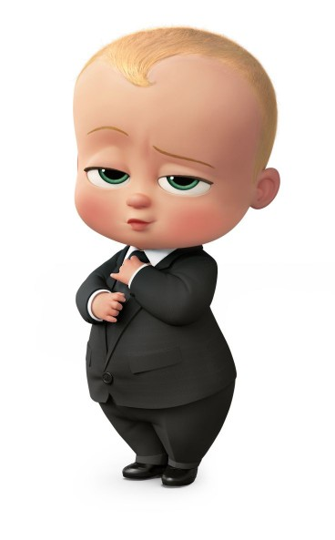

Hola Perú
Bienvenidos
Lenguajes
Ir a la pagina amarilla
| Lima | Piura | Cusco |
|---|
| Ciudades |
|---|
| Trujillo | Loreto | Puno |
| Lima | Piura | Cusco |
| Piura | Cusco |
Primer titulo
Los temas y estilos también ayudan a mantener su documento coordinado. Cuando haga clic en Diseño y seleccione un tema nuevo, cambiarán las imágenes, gráficos y gráficos SmartArt para que coincidan con el nuevo tema. Al aplicar los estilos, los títulos cambian para coincidir con el nuevo tema.
Ahorre tiempo en Word con nuevos botones que se muestran donde se necesiten. Para cambiar la forma en que se ajusta una imagen en el documento, haga clic y aparecerá un botón de opciones de diseño junto a la imagen. Cuando trabaje en una tabla, haga clic donde desee agregar una fila o columna y, a continuación, haga clic en el signo más
subtitulo
Para otorgar a su documento un aspecto profesional, Word proporciona encabezados, pies de página, páginas de portada y diseños de cuadro de texto que se complementan entre sí. Por ejemplo, puede agregar una portada coincidente, el encabezado y la barra lateral. Haga clic en Insertar y elija los elementos que desee de las distintas galerías.
Encabezado 3er nivel
Encabezado 4to nivel
Encabezado 5to nivel
Encabezado 6to nivel
Solo se que nada se

Listas
- Papaya
- Manzana
- Piña
- Platano
- Mouse
- Konitor
- Teclado
- Web cam
- OVNI
- Significa objeto volador no identificado
- Maestro
- Persona que guia a sus estudiantes
Tabla1
| Celda1 | Celda2 |
| Celda3 | Celda4 |
| capitan | Iroman | Perro | Cojin | Animal |
| Beso | Comida | Agua | Cafe | Leche |
| Cama | Sapo | Espagueti | Lapiz | Amor |
| imagen1 | 
| contenidoxx | otro texto |